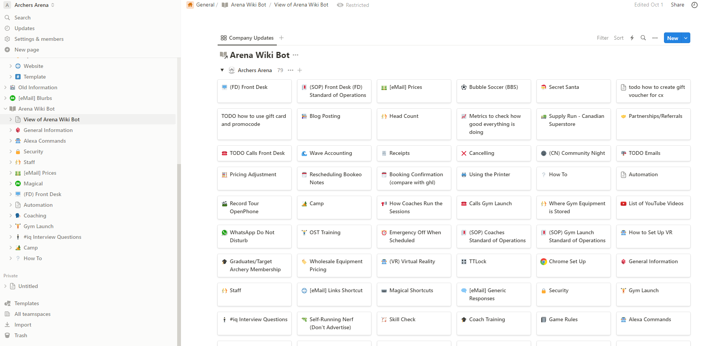

In the journey of setting up an effective, business-specific chatbot, the very first stride we take involves sourcing data from a potpourri of business operations. Whether it is customer inquiries, order requests, or internal procedures, having a grip over these details is key as this is the data that would define the fundamentals of your chatbot's learning.
⋯
Our task is that of a diligent knitter
Upon compiling this data, we carefully structure and transform it into an easily manageable form. Imagine receiving a box full of different coloured wool balls. Our task is like a task of a diligent knitter, making a cozy, colorful blanket by untangling and arranging each strand, one at a time. In our case, we sort through the data collected, and arrange it on a Notion-Wiki page. This process, much like organizing that metaphorical wool, gives us crisp breaks between topics, and manageable chunks of information.
⋯
Next, we move onto the training stage. This is when we introduce our chatbot to the copious amounts of data compiled on our Notion-Wiki page.
Its main job? To learn. To learn how to best respond to queries, each specific to aspects of our business operations.
Think of it as teaching your pet parrot to mimic specific words or sentences. The parrot doesn't understand the linguistic complexities,
but knows when to say what, based on repetition and pattern recognition. Similarly, these chatbots learn over time, understanding the patterns
and optimizing their responses accordingly, making them an invaluable business tool.
VPS Hosting
The best place for hosting our parrot... err, chatbot? A VPS!
While the internet may seem virtual, in reality there is some physical hardware running behind the scenes, like servers. However, owning and maintaining
a server comes with its challenges. VPS, or Virtual Private Server, offers the perfect solution. It gives you the advantage of owning a "space" without
the associated maintenance costs. Hosting our chatbot on a VPS is like renting out a small, comfortable apartment for our virtual assistant to reside in, fully furnished and well-maintained, freeing us from the hassle of continuous upkeep.
Lastly, we shouldn't forget about our secret weapons - the chatGPT by OpenAI and Langchain. They're like the power tools for our chatbot construction project. OpenAI's chatGPT provides the algorithmic brain, understanding and mimicking human conversation patterns, while Langchain streamlines the entire language processing journey. In the end, our chatbot stands tall, ready to answer any and all business specific questions thrown at it, each response reflecting the core understanding nurtured into it.
There you have it! A more human-like, hands-on narrative of building a chatbot! The journey sure involves lots of collecting, sorting, training, and hosting, but isn't the outcome worth it?
⋯